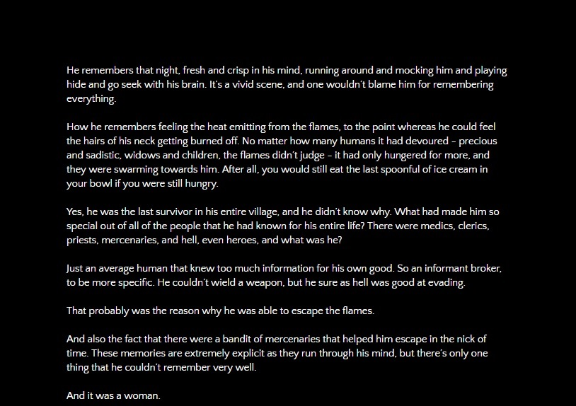

The Singularity
Even with tragedy written all over it, this particular event had made the boy know that his life was destined to go in a path that he had never expected to walk down (Finished on 02-26-2017)


Even with tragedy written all over it, this particular event had made the boy know that his life was destined to go in a path that he had never expected to walk down (Finished on 02-26-2017)
After the death of her boyfriend, Nyaz, Liz is taking a train to go to California. Unfortunately, there's a spirit lurking around the train, hoping to let revenge reign down on their killer... (Finished on 10-22-2015)
Two curious lovers go on the adventure of their life just to seek the truth and beauty of the world, but at a cost [Based off of Hachi's song, World's End Umbrella] (Finished on 06-02-2016)
In which we go in creative depth about the three events that sparked the rise of our obliviously chaotic hero, Hana Hine (Finished on 01-07-2017)
In which we place emphasis on how Sigmiund Freud can't even justify how this character came out to be - it's as if he literally woke up one day and shouted to the core that he wants to be its center, and that he will achieve this goal. [Based off of Ryohgo Narita's Baccano character, Claire Stanfield] (Finished on 01-07-2017)
The blade that one had sworn to use to protect him is the same blade that is being pointed at his chest. [Based off of Intelligent System's Fire Emblem Awakening/Fates character, Inigo/Laslow] (Finished on 01-07-2017)